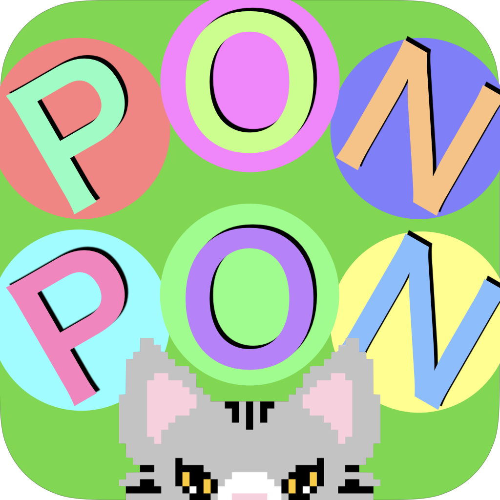
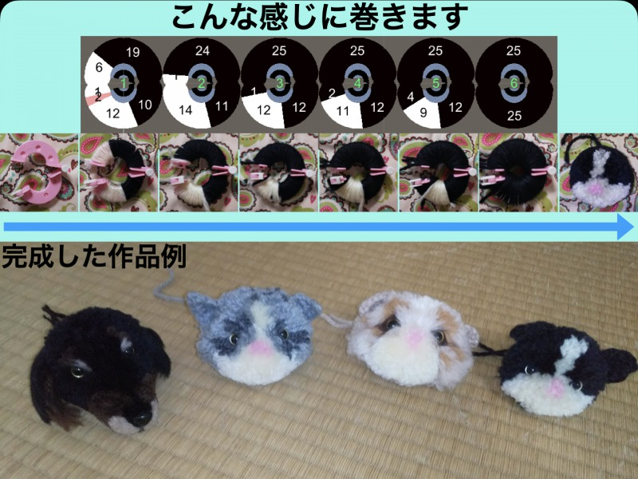

PONPON模様
ぽんぽん巻き図制作支援アプリ
PONPON模様はぽんぽんの巻き図を簡単に作ることのできるアプリです
一般の本では既存の巻き図しか載っておらずオリジナルのぽんぽんを作ることは困難ですが、このアプリはオリジナルのぽんぽんを誰でも簡単に作ることができます。
「WISS 2020:
第28回インタラクティブシステムとソフトウェアに関するワークショップ」に論文を投稿し萌芽発表賞をいただきました



AppStore、GooglePlayで公開していたのですがApple Developer Program(年間$99)や頻繁に更新されるポリシーにうんざりしたため暫定的にWebGLに移植しました。
WebGL版(PC非対応)
多分動きます
WebGL版(PC非対応)
多分動きます